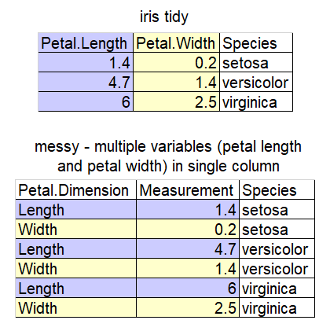
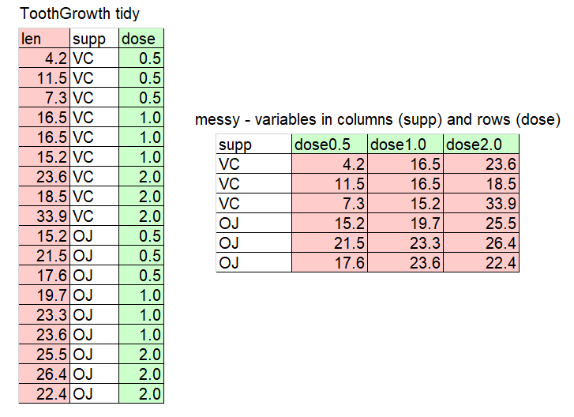
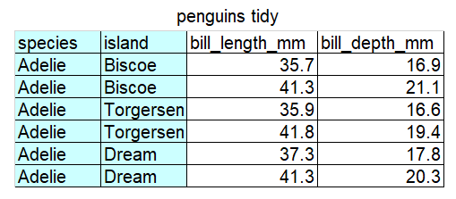

tidyr
set up
To use the tidyr package you will need to ensure you
have it installed on the computer you are using (hint: use the Packages
tab, bottom right) and then load it.
library(tidyr)1 Tidy Data
The same data can be laid out in a spreadsheet in a number of different ways.
“Tidy” data has a layout that makes it easier to do analyses in R. Real data is rarely in the format you need for analysis and often needs to be changed.
 Artwork by @allison_horst
Artwork by @allison_horst
Why does this matter?
Trying to put messy data into statistical tests can cause problems. AI is not good at recognising what tidy format your data needs to be in for the statistical test function to work in R.
1.1 Examples
Study the cartoon and the tables to understand what tidy data is.
![There are two sets of anthropomorphized data tables. The top group of three tables are all rectangular and smiling, with a shared speech bubble reading “our columns are variables and our rows are observations!”. Text to the left of that group reads “The standard structure of tidy data means that “tidy datasets are all alike…” The lower group of four tables are all different shapes, look ragged and concerned, and have different speech bubbles reading (from left to right) “my column are values and my rows are variables”, “I have variables in columns AND in rows”, “I have multiple variables in a single column”, and “I don’t even KNOW what my deal is.” Next to the frazzled data tables is text “...but every messy dataset is messy in its own way. -Hadley Wickham.”.](images/tidydata_messy.jpg)



Tip: Example data
This data is sampled from datasets (mtcars, iris, ToothGrowth) commonly used as examples on R internet help forums and in AI answers if you don’t specify the names of datasets. Being familiar with the column names helps you to understand example code.
Challenge 1
Decide if this data is tidy or messy. Explain why.

Solution to Challenge 1
The data is messy because there are two variables (species and island) in a single column. In other words, there are two observations in each of the cells in the first column. The corresponding tidy version is below. 1.2 separate()
Since “…every messy dataset is messy in it’s own way” there are many
functions you might need to change data. separate() is just
one example.
To demonstrate separate() we will first create the messy
data set in the Challenge above using the combine c()
function. (You may notice AI creating small example data frames (df) in
this way.)
penguin_messy_df <- data.frame(
species_island = c(rep("Adelie Biscoe", 2), rep("Adelie Torgersen", 2), rep("Adelie Cream", 2)), # `rep()` is the repeat function.
bill_length_mm = c(35.7, 41.3, 35.9, 41.8, 37.3, 41.3),
bill_depth_mm = c(16.9, 21.1, 16.6, 19.4, 17.8, 20.3)
)If you run this code for yourself you can view the data frame under the environment tab.
Now we can use separate() to split the
species_island column into two columns and create a new
data frame called penguin_tidy_df.
penguin_tidy_df <- separate(
penguin_messy_df, # the data frame we want to change
col = species_island, # the column we want separated
into = c('species', 'island'), # the names of the new columns we want to create
sep = ' ') # what separates the data. In our case a spaceView penguin_tidy_df to make sure it’s worked.
1.3 long and wide data
Another way you may need to change data is by making it “longer” or
“wider” using the functions pivot_longer() and
pivot_wider(). Study the examples in the following sections
so you understand the difference between the two data formats.
1.3.1 pivot_wider
This code creates a small data frame in long format:
population_long <- data.frame(
country = c(rep("Chad", 2), rep("Cuba", 2), rep("Fiji", 2), rep("Iran", 2)),
year = rep(c(2000, 2020), 4),
population = c(9755000, 16818391, 11269000, 11113215, 848000, 898402, 69515000, 85655490)
)
population_long## country year population
## 1 Chad 2000 9755000
## 2 Chad 2020 16818391
## 3 Cuba 2000 11269000
## 4 Cuba 2020 11113215
## 5 Fiji 2000 848000
## 6 Fiji 2020 898402
## 7 Iran 2000 69515000
## 8 Iran 2020 85655490The function pivot_wider() is used to make each
year a new column, with the values
under population used to fill the new
columns:
population_wide <- pivot_wider(
population_long, # the data frame to be made wider
names_from = year, # the column to take the names for the new columns from
values_from = population, # the column to take values from to fill in the new columns
)
population_wide## # A tibble: 4 × 3
## country `2000` `2020`
## <chr> <dbl> <dbl>
## 1 Chad 9755000 16818391
## 2 Cuba 11269000 11113215
## 3 Fiji 848000 898402
## 4 Iran 69515000 856554901.3.2 pivot_longer
This code, which creates a small data frame in wide format, shows fish weights before and after a treatment:
fish_wide <- data.frame(
fish = c(1:4),
before = c(12.4, 12.9, 11.2, 10.8),
after = c(13.1, 13.2, 12.3, 11.7)
)
fish_wide## fish before after
## 1 1 12.4 13.1
## 2 2 12.9 13.2
## 3 3 11.2 12.3
## 4 4 10.8 11.7The function pivot_longer() is used to take the headings
before and after and repeat in a
column named time and put the
measurements in a new column called
weights:
fish_long <- pivot_longer(fish_wide,
cols = c(before, after), # columns to pivot from wide to long
names_to = "time", # name of the new column for the categories
values_to = "weight" # name of the new column where the values go
)
fish_long## # A tibble: 8 × 3
## fish time weight
## <int> <chr> <dbl>
## 1 1 before 12.4
## 2 1 after 13.1
## 3 2 before 12.9
## 4 2 after 13.2
## 5 3 before 11.2
## 6 3 after 12.3
## 7 4 before 10.8
## 8 4 after 11.7Challenge 2
Use the code to create a wide data set containing the height of four people as children and adults. Use pivot_longer to make the data long. You can reveal the Hint if you need to.
people_heights_wide <- data.frame(
person = 1:4,
child = c(85.4, 79.1, 81.9, 90.1),
adult = c(170.1, 165.9, 168.8, 183.7)
)Hint
The columns to pivot are child and adult. The name of the new column could be “age” The name of the new column for the measurements could be “height”Your data from doing Challenge 2 should look like this
## # A tibble: 8 × 3
## person age height
## <int> <chr> <dbl>
## 1 1 child 85.4
## 2 1 adult 170.
## 3 2 child 79.1
## 4 2 adult 166.
## 5 3 child 81.9
## 6 3 adult 169.
## 7 4 child 90.1
## 8 4 adult 184.Tip: Collecting data
These are small, simple examples. Real data can be difficult to change.
If you are collecting your own data, plan in detail how the data will be analysed so that as you record data you arrange it in your spreadsheet in a way that will make data wrangling and analysis easier.